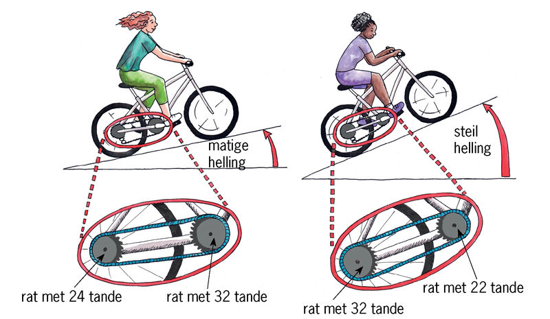Figuur 1: Jy gebruik verskillende kombinasies van ratte aan
’n fiets as jy teen ’n matige helling opry óf teen
’n steil helling. Waarom?
Woorde om te gebruik as
jy oor heuwels en paaie met ’n opwaartse/afwaartse helling praat
gelyk.
helling
of ’n
gradiënt
het.
effense
helling het.
taamlike
helling het.
skerp/steil
helling het.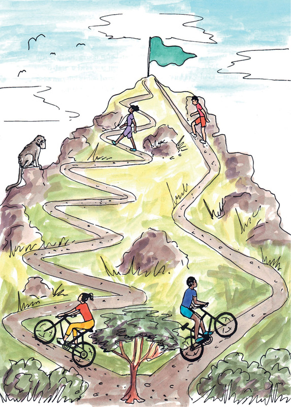
Figuur 2: Watter pad sal jy teen die berg op
neem? Watter pad sal die langste neem?
Hefbome, katrolle en krukasse is
verskillende tipes
meganismes. In hierdie hoofstuk gaan jy leer oor meer
tipes meganismes.
afstandsnadeel. Jy kry
meganiese voordeel
as ’n
masjien dit makliker maak om iets op te lig of te beweeg.
Figuur 3: ’n Tang wat ’n
meganiese voordeel gee.
meganiese nadeel
,maar
afstandsvoordeel.
Jy kry afstandsvoordeel as ’n masjien iets verder laat beweeg.
Figuur 4: ’n Kombuistang wat ’n
afstandsvoordeel gee.
skuinsvlak
genoem word. Die dak van ’n
huis wat teen ’n helling na bo loop, is ook ’n skuinsvlak.
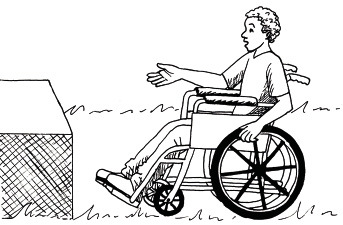Figuur 5
’n Oprit/afrit is ook ’n
skuinsvlak.
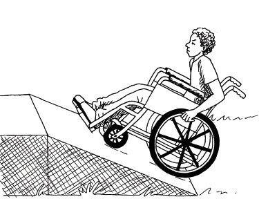Figuur 6
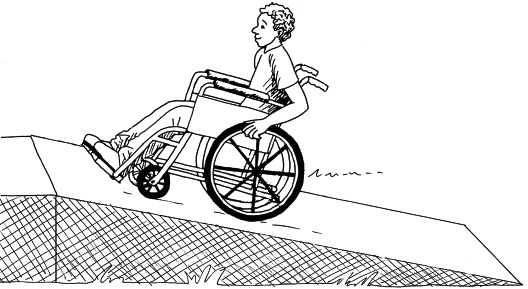
Figuur 7
Watter ontwerp sal dit die
maklikste maak vir die seun om van die grondvlak
na die hoër plek te beweeg, en hoekom? Wenk: lees die stuk onderaan bladsy
57 oor: “Woorde om te gebruik as jy oor heuwels en paaie met ’n opwaartse/
afwaartse helling praat”.
Sal die seun op beide opritte A en
B oor dieselfde afstand beweeg, of sal hy op
een van die opritte oor ’n langer afstand beweeg? Indien wel, watter een?
Sal die krag waarmee die seun die
wiele moet draai op albei opritte dieselfde
wees, of sal dit op een van die opritte groter wees? Indien wel, watter een?
Gebruik die volgende woorde om ’n
paar sinne te skryf om te verduidelik
waarom dit vir die seun makliker sal wees om met die een oprit boontoe te
gaan as met die ander een: insetkrag, uitsetkrag, insetafstand, en
uitsetafstand.
Watter oprit gee vir die seun die
grootste meganiese voordeel?
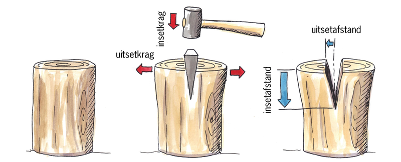Figuur 8: Die wigvorm van die kop van ’n byl maak dit
makliker om hout te kloof.
Is die insetkrag groter of kleiner
as die uitsetkrag? Of is dit dieselfde?
Gee ’n byl ’n meganiese voordeel
of ’n afstandsvoordeel?
waterpas
te kry. As ’n
huis nie waterpas is nie, en jy plaas ’n bal
op die vloer, sal die bal na die laagste kant
of hoek van die huis rol.
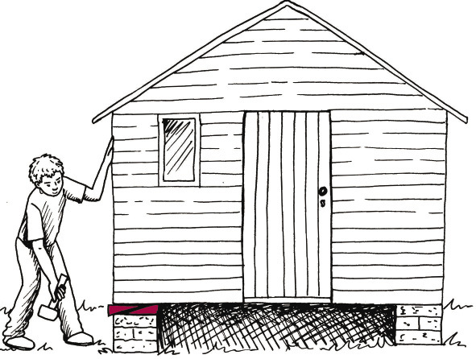Figuur 9: Wîe kan gebruik word om
swaar voorwerpe, selfs huise, op te lig!
rotasiebeweging
in ’n reguit beweging of
liniêre
beweging.
Beide die woorde “rol” en
“roteer” is van dieselfde ou
Latynse woord “rota” afgelei.
“Rotasiebeweging” beteken ’n
rol- of sirkelbeweging.
Die woord “liniêr” hou verband
met die woord “lyn”. “Liniêre
beweging” beteken beweging
in ’n reguit lyn.
wrywing
wees.
Wrywing
is die weerstandskrag
wat dit moeilik maak om iets
oor ’n oppervlak te laat gly.
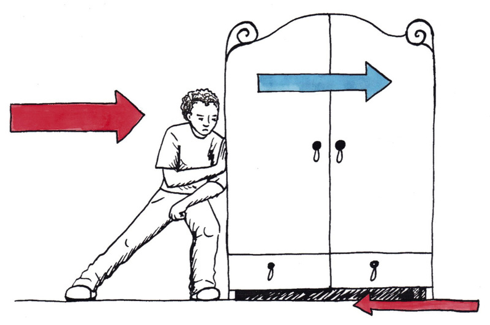Figuur 10
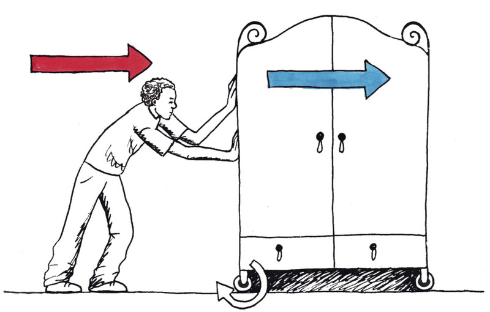
Figuur 11vrydraaiende wiel.
gedrewe wiel
genoem.
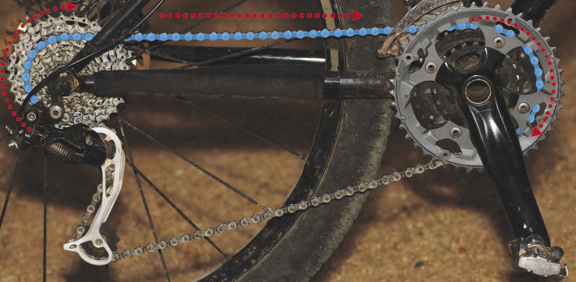
Figuur 12: Die agterwiel van ’n fiets word deur die
rat-en-kettingmeganisme aangedryf.
Die ketting
gaan om ’n rat aan die
agterwiel.
D
Daardie rat het ’n omtrek van 30 cm. As die
ketting dus ’n vorentoe trekbeweging van
30 cm maak, sal die rat een maal roteer.
As die rat een maal roteer, maak die wiel
ook een rotasie.
Die wiel het ’n omtrek van 207 cm. As die
wiel een rotasie voltooi, beweeg die fiets
207 cm vorentoe.
Dus, as jy die ketting 30 cm vorentoe trek,
beweeg die fiets 207 cm vorentoe. Dit is
waarom ’n gedrewe wiel ’n afstandsvoordeel
gee.
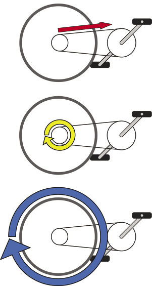Figuur 13: ’n Wiel gee ’n afstandsvoordeel
as genoem. ’n As is vir ’n wiel wat ’n spilpunt of steunpunt vir
’n hefboom
is.
Die afstand waaroor daar aan die
buitekant van
die wiel beweeg word, is baie groter as die afstand
waaroor daar by die as beweeg word. Jy kan dit op
figuur 14 sien, waar die afstand waaroor aan die
buitekant van die wiel beweeg word in blou, en die
afstand waaroor daar by die as beweeg word in rooi
gewys word. Vir dieselfde beweging vorentoe sal ’n
groter wiel ’n kleiner afstand by die as gee. Daarom
gee groter wiele minder skuur of wrywing by die as.
Die meeste wiele het ’n baie gladde, geoliede oppervlak of laers tussen die as en die wiel om die wrywings selfs nog verder te verminder.
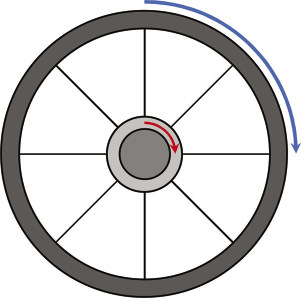Figuur 14
Hoekom is party wiele klein en
ander wiele groot?
Wenk: dink aan die voordele en
nadele van klein wiele en van groot wiele.
Dink ook aan die gewig en koste van die wiele.
’n Motor, ’n 4 × 4-bakkie,
’n inkopietrollie en ’n skaatsplank het elkeen vier
wiele. Sê vir elkeen van hierdie voorbeelde watter wiele vrylopend is en watter
gedrewe.
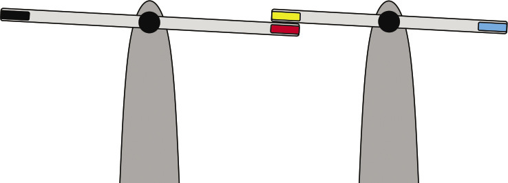Figuur 15
As jy die swart punt van die
linkerkantse hefboom na onder druk,
in watter rigting sal die rooi
punt van die hefboom beweeg, en
in watter rigting sal die blou
punt van die
regterkantse hefboom beweeg?
As jy die swart punt van die
linkerkantse hefboom
na onder druk, sal die hefboom
kloksgewys
draai
soos hier gewys
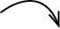
of antikloksgewys
soos hier gewys?
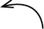
Figuur 16: Om te praat oor die
rigting waarin iets oor ’n afstand
beweeg, gebruik jy die woorde
vorentoe, agtertoe, links, regs,
boontoe en ondertoe. Maar wat as iets nêrens anders heen beweeg nie, maar draai
terwyl dit in dieselfde posisie bly? Dan praat jy oor iets wat soos die wysers
of pyle van ’n horlosie
beweeg.
As jy die hefboom aan die
linkerkant antikloksgewys draai, in watter rigting sal die hefboom aan die
regterkant draai?
Ratte is baie soortgelyk aan hefbome. Kyk na die
tekeninge hieronder.
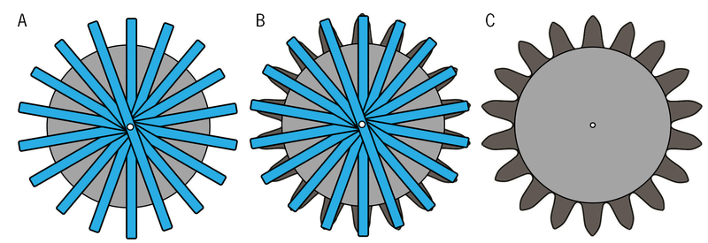Figuur 17: Ratte is baie soortgelyk aan hefbome.
reguittandrat
bekend. In
die derde kwartaal vanjaar, en in graad 9, gaan julle oor ander tipes ratte leer
.
Die rooi rat onder word antikloksgewys gedraai totdat die tand
met die swart
kol die pyltjie bereik.
Trek nog ’n pyltjie om te wys
waar die tand met die blou kol sal wees
wanneer die swart kol die pyltjie bereik.
Trek ’n klein kruisie om te wys
waar die rooi kol sal wees wanneer die swart
kol die pyltjie bereik.
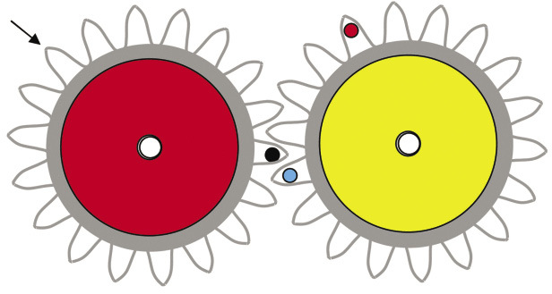Figuur 18
In watter rigting sal die geel
rat draai as die rooi rat antikloksgewys gedraai
word?
In watter rigting moet die klein rat
aan die regterkant gedraai word
sodat die blou kol afwaarts beweeg
as jy begin om die rat te draai?
As die klein rat
kloksgewys gedraai
word totdat die rooi kol weer terug
is by die geel pyltjie,waar sal die
blou kol op die groot rat wees?
Teken ’n pyltjie op die skets om te
wys waar dit sal wees.
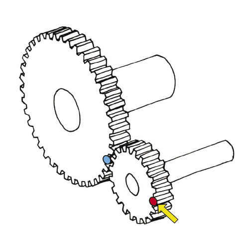Figuur 19
As jy die klein rat met die
hand draai, sal die groot rat vinniger of stadiger
draai as die klein rat? Verduidelik jou antwoord.
insetrat
en ’n
uitsetrat.
Die insetrat word ook die
dryfrat
genoem, en die
uitsetrat word die
gedrewe rat
genoem.
As die klein rat in figuur 19 met die hand gedraai
word, is die klein rat die insetrat.
inkam.
Enige twee ratte wat inkam, beweeg in teen-
oorgestelde rigtings. Dit word teenrotasie genoem.
As jy wil hê dat die dryfrat en die gedrewe rat in dieselfde
rigting moet draai,
sal die twee ratte nie werk nie. Kan jy ’n ander plan maak?
tussenrat
genoem. Die doel van hierdie rat is om die gedrewe rat in dieselfde
rigting as die dryfrat te laat draai.
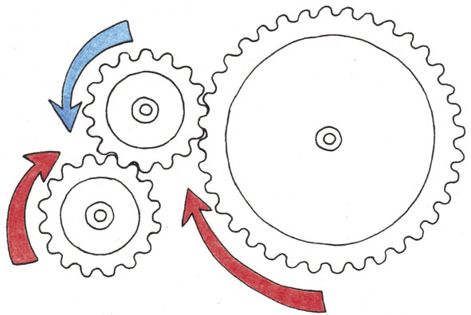Figuur 20: In ’n stel van drie ratte draai die insetrat
en die uitsetrat in dieselfde rigting.
Kyk na die stel ratte in figuur
21. As die rat aan die linkerkant die dryfrat is, sal
die gedrewe rat vinniger of stadiger as die dryfrat draai, of sal dit teen
dieselfde
spoed draai?
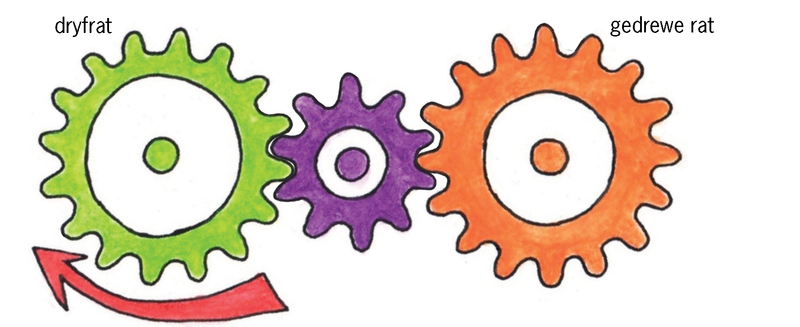Figuur 21
Kyk na die
ratte hier regs. Die groot rat is
die insetrat, en die klein rat is die uitsetrat.
Elke rat is aan ’n as vasgeheg en die as
dryf ’n waaier aan. Die spoed waarteen die
waaier draai, word die rotasiespoed
van
die as genoem.
Sal die waaier aan
die groot wiel
vinniger of stadiger draai as die waaier
aan die klein wiel of sal die twee waaiers ewe vinnig draai?
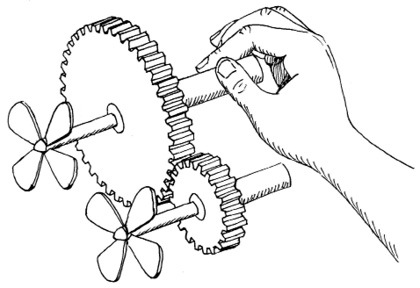Figuur 22
Sal die krag waarmee jy die as
van die groot insetrat draai groter of kleiner
wees as die draaikrag op die as van die kleiner uitsetrat?
Ratverhouding
en spoedverhouding
is dieselfde ding. Dit kan ook
“snelheidverhouding” genoem word.
draaikrag op
die insetas in ’n ander wringkrag op die uitsetas.
As die rotasiespoed van die
insetas vinniger is, sal die wringkrag op die uitsetas
kleiner wees. Vir die ratstelsel in figuur 22, oefen die uitsetas die helfte van
die
krag van die insetas uit.
Draaikrag word ook
wringkrag
genoem.
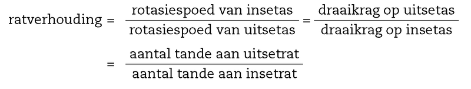
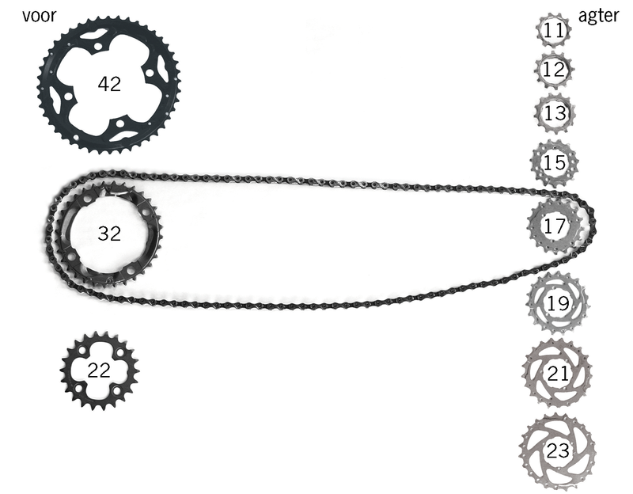Figuur 23: Ratkeuses by ’n fiets
Wat is die grootste ratverhouding wat jy by hierdie fiets kan kies? Kies
die voorste en die agterste ratte wat jy sal gebruik, en bereken dan
die
ratverhouding.
Watter kombinasie van die
voorste rat en die agterste rat sal jy kies om teen
’n baie steil heuwel uit te trap?